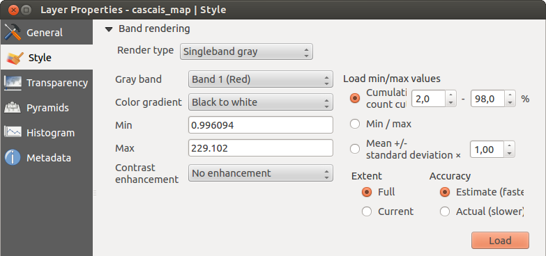
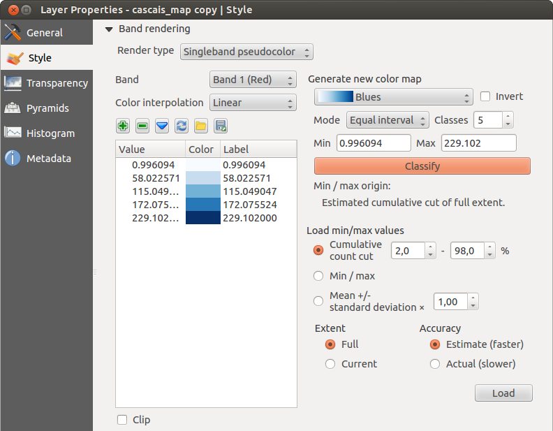
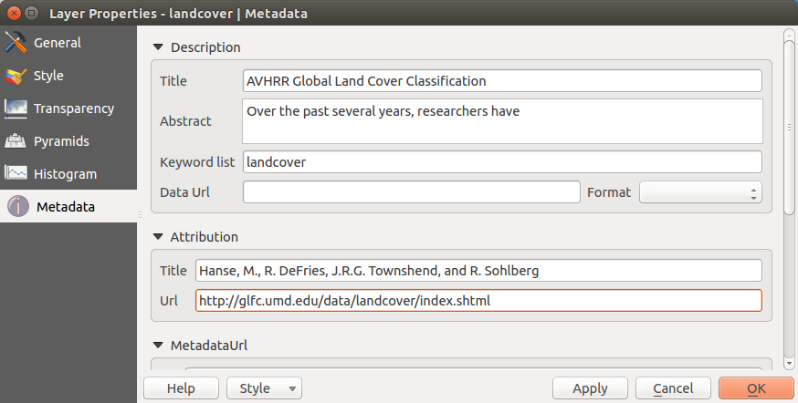

Dialogfenster Rasterlayereigenschaften
Um die Eigenschaften eines Rasterlayers zu sehen oder einzustellen doppelklicken Sie auf den Layernamen in der Legende oder rechtsklicken Sie auf den Layernamen und wählen Sie Eigenschaften aus dem Kontextmenü. Dies öffnet den Layereigenschaften Dialog.
Es gibt mehrere Menüs in diesem Dialog:
Allgemein
Stil
Transparenz
Pyramiden
Histogramm
Metadaten

Menü Allgemein
Layerinformation
Das Menü Allgemein stellt grundlegende Informationen über den ausgewählten Rasterlayer dar, einschließlich der Layerquelle, dem Anzeigenamen (der verändert werden kann) und der Anzahl von Spalten, Zeilen und LeerWerten des Rasterlayers.
Koordinatenbezugssystem
Hier können Sie das Koordinatenbezugssystem (KBS) als PROJ.4 Text ablesen. Wenn diese Einstellung nicht richtig ist können Sie Sie verändern indem Sie den Knopf [Angeben] klicken.
Maßstabsabhängige Sichtbarkeit
Zusätzlich kann eine skalenabhängige Sichtbarkeit eingestellt werden. Dazu muss das Kontrollkästchen aktiviert sein und ein entsprechender Maßstab, indem Ihre Daten im Kartenfenster dargestellt werden, eingetragen werden.
Unten können Sie einen Thumbnail, sein Legendensymbol und die Palette sehen.
Menü Stil
Kanaldarstellung
KADAS bietet vier verschiedene Darstellungsart. Die ausgewählte Darstellungsart hängt vom Datentyp ab.
Multikanalfarbe - wenn die Datei ein Multiband mit mehreren Kanälen ist (z.B. bei einem Satellitenbild mit mehreren Bändern)
Palette - wenn ein Einkanalbild eine indizierte Palette besitzt (z.B. benutzt bei digitalen Topographischen Karten)
Einkanalgraustufen - das Bild oder ein Kanal davon wird grau dargestellt; KADAS benutzt diese Darstellung wenn die Datei weder Multibänder, noch eine indizierte Palette noch eine kontinuirliche Palette (z.B. in einer Schummerungskarte benutzt) besitzt.
Einkanalpseudofarbe - diese Darstellung ist bei Dateien mit kontinuirlicher Palette oder Farbkarte (z.B. wie sie in Höhenkarten verwendet wird) möglich
Multikanalfarbe
Mit der Darstellung Multikanalfarbe werden drei ausgewählte Kanäle des Bildes dargestellt, wobei jedes Band due rote, grüne oder blaue Komponente zum Erstellen eines Farbbildes darstellt.

Diese Auswahl bietet Ihnen ein breites Spektrum von Optionen zum Verändern des Erscheinungsbildes des Rasterlayers an. Zuerst müssen Sie den Datenbereich Ihres Bildes abrufen. Dieser kann durch das Wählen von Ausdehnung und das Klicken von [Laden] ermittelt werden. KADAS kann die Min und Max Werte der Kanäle  Schätzen (schneller) oder die
Schätzen (schneller) oder die  Genau (langsamer) Genauigkeit verwenden.
Genau (langsamer) Genauigkeit verwenden.
Jetzt können Sie die Farben mit Hilfe des Min/Max Werte Bereichs skalieren. Viele Bilder haben ein paar sehr tiefe und hohe Daten. Diese Ausreißer können anhand der Kommulativer Anzahlschnitt Einstellung beseitigt werden. Der voreingestellte Datenbereich ist auf 2% bis 98% der Datenwerte eingestellt und kann manuell angepasst werden. Mit dieser Einstellung kann das graue Aussehen des Bildes verschwinden. Mit der Skalierungsoption Min/max erstellt KADAS eine Farbtabelle von allen im Originalbild enthaltenen Daten (z.B. erstellt KADAS eine Farbtabelle mit 256 Werten, vorausgesetzt Sie haben 8bit-Kanäle). Sie können Ihre Farbtabelle auch mit der Mittlere +/- Standardabweichung x  berechnen. Dann werden nur Werte innerhalb der Standardabweichung oder innerhalb mehrerer Standardabweichungen verwendet. Dies ist nützlich wenn ein oder zwei Zellen mit anormalen hohen Werten, die einen negativen Effekt auf die Darstellung des Rasterbildes haben, in einem Grid auftauchen.
berechnen. Dann werden nur Werte innerhalb der Standardabweichung oder innerhalb mehrerer Standardabweichungen verwendet. Dies ist nützlich wenn ein oder zwei Zellen mit anormalen hohen Werten, die einen negativen Effekt auf die Darstellung des Rasterbildes haben, in einem Grid auftauchen.
Alle Berechnungen können auch für die Aktuell Ausdehnung durchgeführt werden.
Einen einzelnen Kanal eines Mehrkanal-Rasterlayers anzeigen
Wenn Sie sich nur einen einzelnen Kanal eines Multikanalfarbe Bildes (z.B. Rot) ansehen wollen kommen Sie vielleicht auf die Idee den Grün- und Blaukanal auf ‘’Nicht gesetzt” einzustellen. Dies ist nicht der korrekte Weg. Um den Rotkanal darzustellen stellen Sie den Bildtyp auf ‘Einkanalgraustufen’ ein und wählen Sie dann Rot als Kanal, der für Grau benutzt werden soll, aus
Palette
Dies ist die voreingestellt Darstellungsart für Singleband-Dateien die bereits eine Farbtabelle besitzen, wobei jedem Pixel eine bestimmte Farbe zugewiesen wird. In diesem Fall wird die Palette automatisch dargestellt. Wenn Sie die Farben, die einem bestimmten Wert zugewiesen werden, ändern wollen, Doppelklicken Sie auf die Farbe und der Farbauswahl Dialog erscheint. Seit KADAS 2.2. ist es möglich dem Farbwert eine Beschriftung zuzuweisen. Die Beschriftung erscheint dann in der Legende des Rasterlayers.

Kontrastverbesserung
Wenn GRASS Rasterlayer hinzugefügt werden wird die Option Kontrastverbesserung immer automatisch auf Strecken auf MinMax eingestellt, ungeachtet der Einstellungen in den KADAS Optionen.
Einkanalgraustufen
Mit dieser Darstellungsart können Sie ein Einkanalbild mit einem Farbverlauf darstellen: ‘Schwarz nach Weiß’ oder ‘Weiß nach Schwarz’. Sie können einen Min und einen Max Wert festlegen indem Sie erst Ausdehnung auswählen und dann [Laden] drücken. KADAS kann die Min und Max Werte der Kanäle Schätzen (schneller) oder die Genau (langsamer) Genauigkeit verwenden.

Im Extremwerte laden Abschnitt ist das Skalieren der Farbtabelle möglich. Ausreißer können anhand der Kommulativer Anzahlschnitt Einstellung beseitigt werden. Der voreingestellte Datenbereich ist von 2% bis 98% der Datenwerte eingestellt und kann manuell angepasst werden. Mit dieser Einstellung kann der graue Charakter des Bildes verschwinden. Weitere Einstellungen können mit Extrema und Mittlere +/- Standardabweichung x gemacht werden. Während die erste eine Farbtabelle mit allen Daten, die im Originalbild enthalten sind, erstellt, erstellt die zweite eine Farbtabelle die nur Werte innerhalb der Standardabweichung oder mehrerer Standardabweichungen berücksichtigt. Dies ist nützlich wenn Sie eine oder zwei Zellen mit anormal hohen Werten in einem Grid haben die einen negativen Einfluss auf die Darstellung des Rasterlayers haben.
Einkanalpseudofarbe
Dies ist eine Darstellungsoption für Einkanaldateien die eine kontinuirliche Palette enthalten. Sie können hier auch individuelle Karten für die einzelnen Kanäle erstellen.

Es sind drei Typen von Farbinterpolation möglich:
Diskret
Linear
- Genau
Im linken Block fügt der Knopf Werte manuell hinzufügen einen Wert zu der individuellen Farbtabelle hinzu. Der Knopf  Gewählte Zeile löschen löscht einen Wert aus der individuellen Farbtabelle und der
Gewählte Zeile löschen löscht einen Wert aus der individuellen Farbtabelle und der  Farbabbildungselemente Knopf sortiert die Farbtabelle gemäß den Pixelwerten in der Wertespalte. Ein Doppelklick auf die Wertespalte macht das Eingeben eines spezifischen Wertes möglich. Das Doppelklicken auf die Farbspalte öffnet den Dialog Change color in dem Sie eine Farbe die auf den Wert angewendet werden soll auswählen können. Des weiteren können Sie auch Beschriftungen für jede Farbe hinzufügen, allerdings wird dieser Wert nicht angezeigt wenn Sie das Objekte abfragen Werkzeug benutzen. Sie können auch auf den Knopf mActionDraw| Farbabbildung aus Kanal laden klicken welcher versucht die Tabelle aus dem Kanal zu laden (falls dieser eine hat). Und Sie können die Knöpfe
Farbabbildungselemente Knopf sortiert die Farbtabelle gemäß den Pixelwerten in der Wertespalte. Ein Doppelklick auf die Wertespalte macht das Eingeben eines spezifischen Wertes möglich. Das Doppelklicken auf die Farbspalte öffnet den Dialog Change color in dem Sie eine Farbe die auf den Wert angewendet werden soll auswählen können. Des weiteren können Sie auch Beschriftungen für jede Farbe hinzufügen, allerdings wird dieser Wert nicht angezeigt wenn Sie das Objekte abfragen Werkzeug benutzen. Sie können auch auf den Knopf mActionDraw| Farbabbildung aus Kanal laden klicken welcher versucht die Tabelle aus dem Kanal zu laden (falls dieser eine hat). Und Sie können die Knöpfe  Farbabbildung aus Datei laden oder
Farbabbildung aus Datei laden oder  Farbabbildung in Datei speichern verwenden um eine bestehende Farbtabelle zu laden oder eine definierte Farbtabelle für andere Sitzungen zu speichern.
Farbabbildung in Datei speichern verwenden um eine bestehende Farbtabelle zu laden oder eine definierte Farbtabelle für andere Sitzungen zu speichern.
Im rechten Block wird Ihnen durch Neue Farbabbildung generieren das Erstellen von neuen kategorisierten Farbkarten ermöglicht. Für den Modus  ‘Gleiches Intervall’ müssen Sie nur die Anzahl der Klassen auswählen und den Knopf Klassifizieren drücken. Sie können die Farben der Farbkarte invertieren indem Sie auf das
‘Gleiches Intervall’ müssen Sie nur die Anzahl der Klassen auswählen und den Knopf Klassifizieren drücken. Sie können die Farben der Farbkarte invertieren indem Sie auf das  Invertieren Kontrollkästchen klicken. Im Fall des Modus ‘Fortlaufend’ erstellt KADAS automatisch Klassen abhängig von Min und Max. Das Definieren von Extremwerten kann mit Hilfe des Extremwerte laden Abschnitts durchgeführt werden. Viele Bilder haben einige wenige sehr tiefe und hohe Daten. Diese Ausreißer können anhand der Kommulativer Anzahlschnitt Einstellung beseitigt werden. Der voreingestellte Datenbereich ist von 2% bis 98% der Datenwerte eingestellt und kann manuell angepasst werden. Anhand dieser Einstellung kann der graue Charakter des Bildes verschwinden. Mit der Skalierungsoption Extrema erstellt KADAS eine Farbtabelle mit allen im Originalbild enthaltenen Daten (z.B. erstellt KADAS eine Farbtabelle mit 256 Werten, vorausgesetzt Sie haben 8bit Kanäle). Sie können Ihre Farbtabelle auch anhand der Mittlere +/- Standardabweichung x berechnen. Dann werden nur Werte innerhalb der Standardabweichung oder mehrerer Standardabweichungen für die Farbtabelle berücksichtigt.
Invertieren Kontrollkästchen klicken. Im Fall des Modus ‘Fortlaufend’ erstellt KADAS automatisch Klassen abhängig von Min und Max. Das Definieren von Extremwerten kann mit Hilfe des Extremwerte laden Abschnitts durchgeführt werden. Viele Bilder haben einige wenige sehr tiefe und hohe Daten. Diese Ausreißer können anhand der Kommulativer Anzahlschnitt Einstellung beseitigt werden. Der voreingestellte Datenbereich ist von 2% bis 98% der Datenwerte eingestellt und kann manuell angepasst werden. Anhand dieser Einstellung kann der graue Charakter des Bildes verschwinden. Mit der Skalierungsoption Extrema erstellt KADAS eine Farbtabelle mit allen im Originalbild enthaltenen Daten (z.B. erstellt KADAS eine Farbtabelle mit 256 Werten, vorausgesetzt Sie haben 8bit Kanäle). Sie können Ihre Farbtabelle auch anhand der Mittlere +/- Standardabweichung x berechnen. Dann werden nur Werte innerhalb der Standardabweichung oder mehrerer Standardabweichungen für die Farbtabelle berücksichtigt.
Farbdarstellung
Für jede Kanaldarstellung ist eine Farbdarstellung möglich.
Sie können auch spezielle Darstellungseffekte für Ihre Rasterdatei(en) erreichen indem Sie Mischmodi verwenden.
Weitere Einstellungen können durch das Verändern der Helligkeit, der Sättigung und des Kontrast gemacht werden. Sie können auch eine Graustufen Option verwenden bei der Sie zwischen ‘Nach Helligkeit’, ‘Nach Leuchtkraft’ und ‘Nach Durchschnitt’ wählen können. Für einen Farbwert in der Farbtabelle können Sie die ‘Stärke’ verändern.
Abtastung
Die Abtastung Option kommt zur Erscheinung wenn Sie in ein Bild herein- oder herauszoomen. Abtastungsmodi können die Erscheinung der Karte optimieren. Sie berechnen eine neue Grauwertmatrix anhand einer geometrischen Transformation.

Wenn Sie die ‘Nächster Nachbar’ Methode anwenden kann die Karte eine pixelige Struktur bein Hineinzoomen haben. Dieses Erscheinungsbild kann verbessert werden indem man die ‘Bilinear’ oder ‘Kubisch’ Methode verwendet, die scharfe Objekte verwischt. Der Effekt ist ein weicheres Bild. Diese Methode kann z.B. auf digitale Topographische Karten angewendet werden.
Menü Transparenz
KADAS besitzt die Fähigkeit jeden Rasterlayer auf einem unterschiedlichen Transparenzlevel darzustellen. Verwenden Sie den Transparenzschieberegler  um einzugeben bis zu welchem Ausmaß die darunterliegenden Layer (falls es welche gibt) sichtbar durch den aktuellen Rasterlayer sein sollen. Dies ist sehr nützlich wenn Sie mehr als einen Rasterlayer überlagern wollen (z.B. wenn eine Schummerungskarte von einer klassifizierten Rasterkarte überlagert werden soll). So wird die Karte dreidimensionaler aussehen.
um einzugeben bis zu welchem Ausmaß die darunterliegenden Layer (falls es welche gibt) sichtbar durch den aktuellen Rasterlayer sein sollen. Dies ist sehr nützlich wenn Sie mehr als einen Rasterlayer überlagern wollen (z.B. wenn eine Schummerungskarte von einer klassifizierten Rasterkarte überlagert werden soll). So wird die Karte dreidimensionaler aussehen.
Zusätzlich können Sie einen Rasterwert eingeben der als Leerwert im Zusätzlicher Leerwert Menü behandelt wird.
Die Transparenz kann noch flexibler über die Transparente Pixelliste angepasst werden. Die Transparenz jedes Pixels kann hier eingestellt werden.
Als Beispiel wollen wir die Wasserflächen aus dem Rasterlayer landcover.tif auf eine Transparenz von 20% setzen. Folgende Schritte sind dazu notwendig:
Laden Sie die Rasterdatei
landcover.tif.Öffnen Sie den Dialog Layereigenschaften indem Sie auf den Namen in der Legende doppelklicken, oder im Rechte-Maustaste Menü Eigenschaften auswählen.
Wählen Sie das Menü Transparenz.
Wählen Sie ‘Keines’ aus dem Transparenzkanal Menü.
Klicken Sie den Werte manuell hinzufügen Knopf. Eine neue Zeile erscheint in der Pixelliste.
Geben Sie den Rasterwert in die ‘Von’ und ‘Nach’ Spalte ein (wir benutzen hier 0) und passen Sie die Transparenz auf 20% an.
Drücken Sie den Knopf [Anwenden] und schauen Sie sich das Ergebnis an.
Sie können Schritte 5 und 6 wiederholen um mehr Werte mit benutzerdefinierter Transparenz einzustellen.
Wie Sie sehen können ist es recht einfach die benutzerdefinierte Transparenz einzustellen, aber es kann ganz schön viel Arbeit sein. Deswegen können Sie den Knopf  In Datei exportieren benutzen um Ihre Transparenzliste in eine Datei zu speichern. Der Knopf Aus Datei importieren lädt Ihre Transparenzeinstellungen und wendet sie auf den aktuellen Rasterlayer an.
In Datei exportieren benutzen um Ihre Transparenzliste in eine Datei zu speichern. Der Knopf Aus Datei importieren lädt Ihre Transparenzeinstellungen und wendet sie auf den aktuellen Rasterlayer an.
Menü Metadaten
Das Metadaten Menü stellt eine Fülle von Informationen über den Rasterlayer dar, einschließlich Statistiken über jeden Kanal im aktuellen Rasterlayer. In diesem Menü können Einträge für Beschreibung, Beschreibung, Metadaten-URL und Eigenschaften gemacht werden. In Eigenschaften werden Statistiken nach dem Prinzip ‘was brauche ich’ erstellt, so dass es gut sein kann dass für einen Rasterlayer noch keine Statistik erstellt oder gesammelt wurde.
